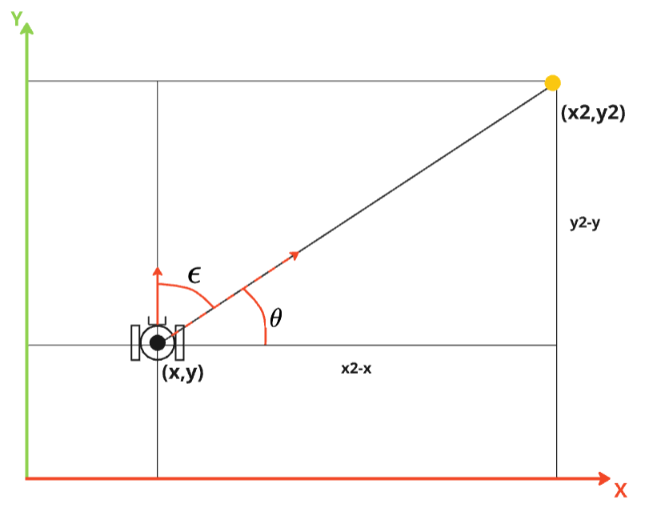

GoTo (vai até coordenadas)
Quando o robô está em um ambiente conhecido, é possível fazer com que ele vá até uma coordenada específica. Para isso, é necessário que o robô saiba a sua posição e a posição desejada. Nesta atividade, você irá criar um nó que faz o robô ir até uma coordenada específica.
Geometria
Considere que o robô está em um plano cartesiano e que a posição do robô é dada por (x, y) e a posição desejada é dada por (x2, y2).

Para fazer o robô ir até a posição desejada, devemos "mirar" o robô em direção ao ponto desejado e então fazer o robô se mover até o ponto. Para isso, devemos calcular o erro angular entre o yaw atual do robô e o ângulo theta formado entre o robô e o ponto desejado.
A distância entre o robô e o ponto desejado pode ser utilizado para controlar a velocidade do robô. Quanto mais perto do ponto, menor a velocidade.
Comportamento
O robô deve primeiro girar até se alinhar com o ponto desejado e então iniciar o deslocamento. A ação utiliza os estados center, goto, stop e done, seguindo o modelo de ação do capítulo 3.
- A ação começa em
done, aguardando uma chamada areset(point). Essa chamada inicia o estadocenter, que faz o robô girar até se alinhar com o ponto desejado. - O estado
gotodeve utilizar controladores proporcionais para mover o robô até o ponto desejado (kp_linear) e ajustar a sua orientação (kp_angular). - Ao atingir a tolerância de distância, o robô entra em
stop, publica velocidade zero, encerra o timer e passa paradone.
Prática 1: Ação GoTo
Baseando-se no Nó Base de Ação do capítulo 3, crie o arquivo goto.py, com a classe GoTo e o nó goto_node, para levar o robô real até uma coordenada.
- A classe deve herdar de
NodeeOdom, inicializando ambas as classes. - Comece em
donee mantenha os estadoscenter,goto,stopedonena máquina de estados. - Implemente
reset(point), recebendo umgeometry_msgs.msg.Point. Salve o destino, zere o comando de velocidade e inicie o estadocentere o timer de controle, conforme o modelo do capítulo 3. - Antes de movimentar o robô, aguarde o recebimento da odometria, incluindo a orientação
yaw. - Implemente
get_angular_errorpara calcular o ângulo até o destino comatan2(y_destino - y, x_destino - x)e o erro em relação aoyawatual. Normalize esse erro para o intervalo[-pi, pi]. - Calcule também a distância até o destino. No estado
center, mantenha a velocidade linear zero e gire até atingir uma tolerância angular definida pelo grupo. - No estado
goto, usekp_linearpara controlar a aproximação ekp_angularpara corrigir a orientação. Limite as velocidades e pare ao atingir uma tolerância de distância definida pelo grupo. - Em
stop, zere a velocidade, encerre o timer e passe paradone. Uma nova chamada areset(point)deve permitir executar outro destino.
As coordenadas do destino devem usar o mesmo referencial da posição medida. Nesta atividade, use o frame odom; a posição global no frame map será discutida na atividade de SLAM. O GoTo controla o deslocamento até um ponto, mas não planeja desvios de obstáculos: teste inicialmente em uma região livre.
Verificação
Teste destinos à frente, ao lado e atrás do robô. Verifique se ele alinha, se aproxima e para antes de enviar o próximo destino. Esse comportamento será reutilizado para percorrer os vértices do quadrado na APS 8.